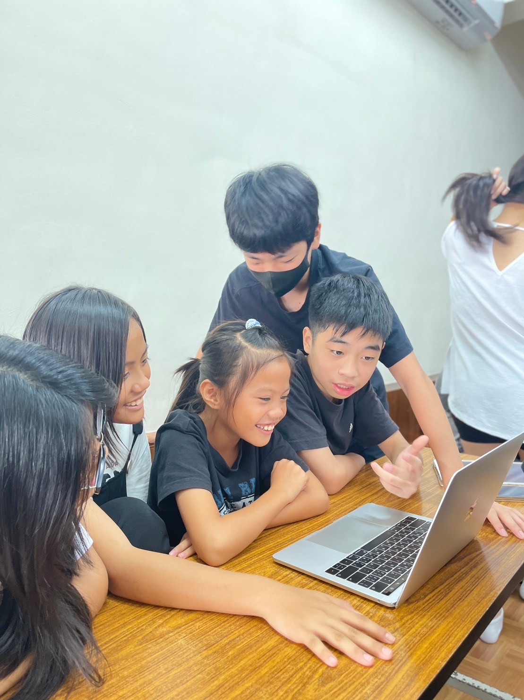
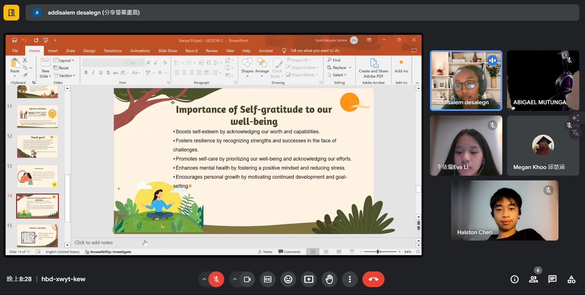

莿客志工團

我正在教原住民們玩scratch(點擊圖片可以到官網)
我利用暑假到台東參加愛悅書屋及莿桐部落的義工活動，經過這次的偏鄉服務我發現台灣雖然不是一個經濟差或落後的國家，但是在一些小角落還是會有一些無法跟上的小村落或是部落。
這次服務大多數在一些弱勢、隔代教養、經濟能力不足或單親的家庭的小朋友，但是我很驚訝他們都抱著樂觀且熱情的態度面對生活，每天一走進服務單位就看見他們充滿期待的眼神和大大的微笑。
我也學到了如何去指導且帶領小朋友，我覺得非常值得且有意義的體驗。
肯亞共學計畫

和肯亞人一起上課!!
P參加台科大舉辦的肯亞共學志工活動，在這次的活動中，讓我更加了解那些肯亞小孩們的生活和傳統文化。
因為我的肯亞學伴們都比較活潑積極，所以我可以更容易地去了解他們和介紹台灣的特色和傳統給他們。
我們在活動中討論了關於氣候變遷、環保、和水汙染、空氣汙染等問題，我們也用了AI畫圖軟體去繪畫出我們的想法來讓大家認識在不同的地區有怎樣不同的想法，這是非常有趣的經驗。